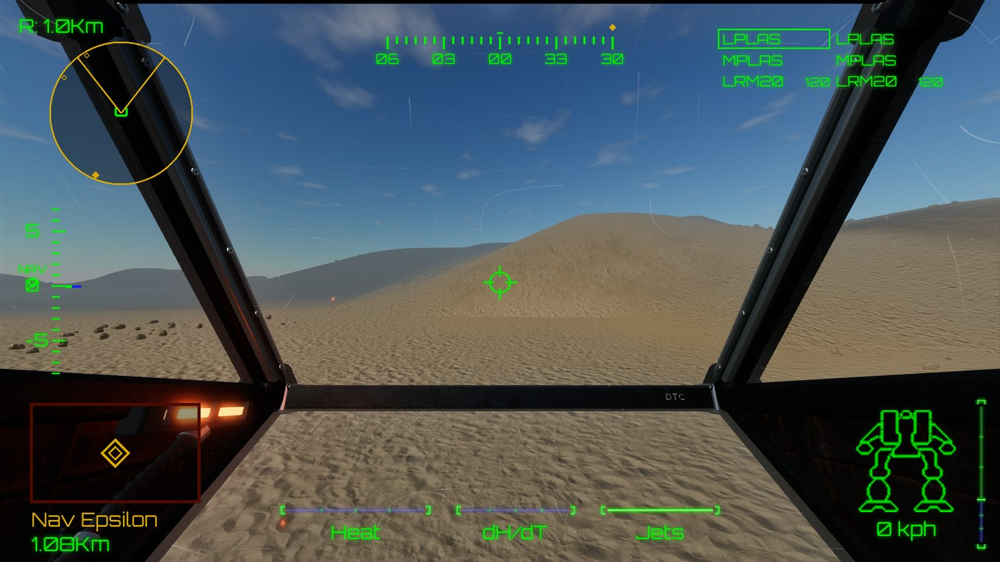
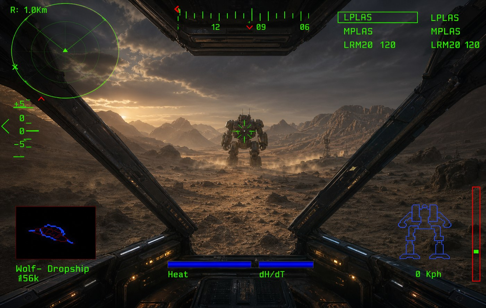
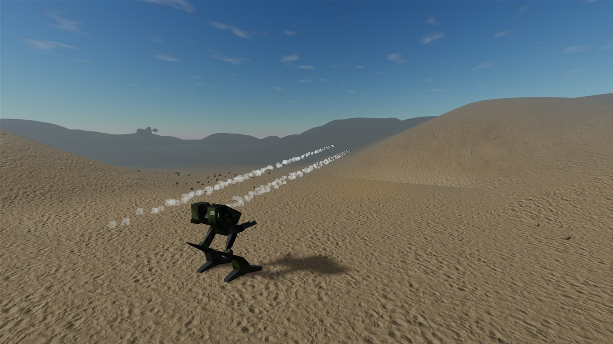
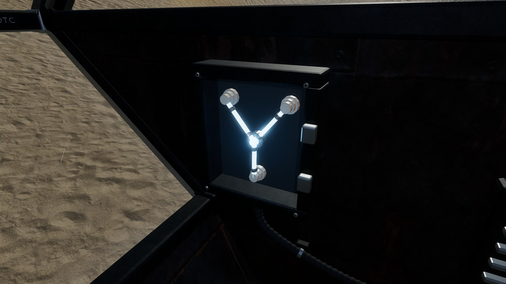

MechWarrior 2 begins with a cockpit coming alive.
Displays wake up. Systems report in. A targeting reticle appears over a strange landscape. Then several dozen tonnes of BattleMech begin moving with exactly the urgency you would expect from several dozen tonnes of BattleMech.
I'm old enough that when I was at Uni having access to an internet connection was a very special (and slow...) thing. So when relaxing in the evenings I'd often play MechWarrior 2. I have fond memories of navigating levels in my 'mech' and mastering the quite cryptic keyboard commands...
This project followed on from my revamp of Wolfenstein (see Wolfenshine), as I fancied another attempt to bring an 'old' game into the modern era without changing all the graphics and gameplay. (After all, the newer MechWarrior games did a great job of that already.)
MechRewired is my attempt to make that experience playable on modern Windows, macOS and Linux while retaining the original missions, models and unmistakable green HUD.
It is not a remaster containing copied game data. The player supplies a legitimate DOS installation; MechRewired imports and validates it, then combines those original materials with a newly written C# game implementation and modern rendering.


Begin with MW2.PRJ
The original game stores much of its world inside formats designed for a 1990s DOS title, not for a modern engine.
MechRewired accepts an original game directory, archive or MW2.PRJ, validates the data and places it in a per-user location. From there the importer needs to turn old assets and mission information into things the modern runtime can use—without quietly baking copyrighted game content into the repository.
That boundary influences the entire project. Development tools need to inspect and convert data locally. The game needs a friendly setup path for players. Tests need fixtures that verify the importer without depending on private files committed to source control.
The game file formats have some documentation, if you know where to look - Enough for me to get started, anyway.
The cockpit is the game’s personality
A BattleMech is not a free-moving camera with a gun attached. The original game did a great job of adding mech sound effects and computer voice (Which I've since learnt was called 'Betty'!)
The legs establish direction and speed while the torso can rotate to track a target. Weapons have range, ammunition and heat consequences. Jump jets briefly change the problem from driving to controlled falling. Radar, navigation points, targeting and mission reports compete for attention inside the cockpit.
Recreating those systems matters more than simply putting an original model onto attractive terrain. The machine should feel heavy, slightly awkward and enormously powerful.
MechRewired supports the original throttle-style controls, independent torso movement, weapon cycling, hostile targeting, jump jets and multiple radar views. A modern mouse-look option coexists with the keyboard controls rather than erasing them.
In the future I might add joypad input, and I'd really like to make a VR version too - One of the reasons I chose Godot as the graphics engine.
Old missions, new atmosphere
The original objectives and locations provide the structure. Modern rendering supplies a fresh sense of place around them.
Terrain gains detailed surfaces, scattered rocks and distant ridges. Dust moves through the scene. Missiles leave smoke trails. Cockpit glass catches scratches and light. Different clan missions can have distinct skies, mountains and colour palettes while remaining recognisable as the original battlefields.

There's even a flux capacitor.

Reimplementation rather than redistribution
MechRewired’s source is open, but the original MechWarrior 2 assets are not. The repository contains the new engine, import logic and project-owned material. Players bring their own game data, which remains in their user-data directory.
This is slightly less convenient than bundling everything, but it keeps the project honest and makes the technical achievement clearer: the interesting part is the system that understands and presents those materials, not possession of the materials themselves.
What comes next
I'm going to be adding support for more game levels, maybe the training stages too, and have fun adding VR support.
Follow development on GitHub.